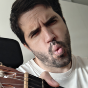

Afinador
AUTOE2
Toca una cuerda
82,41 Hz
Detecta la cuerda sola. Pulsa una para fijarla.
De Literato, para sus amigos de la tuna.
Porque por más que le pese a Nobita, a veces hay que afinar.
Detecta la cuerda sola. Pulsa una para fijarla.
De Literato, para sus amigos de la tuna.
Porque por más que le pese a Nobita, a veces hay que afinar.

Necesito el micrófono para oír el instrumento.